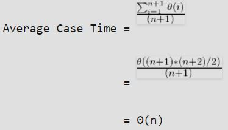

HackersFriend / Tutorials / Introduction to Programming / Complexity Analysis / Understanding algorithm analysis
Understanding algorithm analysis
What is complexity analysis ?
Sometimes, there are more than one way to solve a problem. We need to compare the performance of different algorithms and choose the best one to solve a particular problem. There comes complexity analysis. While analyzing an algorithm, we mostly consider time complexity and space complexity.
Time complexity:
Time complexity of an algorithm quantifies the amount of time taken by an algorithm to run and process the given input and produce output.
Space complexity:
Space complexity of an algorithm quantifies the amount of space or memory taken by an algorithm to run and process the given input and produce output.
Time and space complexity depends on lots of things like hardware, operating system, processors, etc. However, we don't consider any of these factors while analyzing the algorithm.
Order of growth:
Let us say we run the Linear Search on a fast computer and Binary Search on a slow computer. For small values of input array size n, the fast computer may take less time. But, after certain value of input array size, the Binary Search will definitely start taking less time compared to the Linear Search even though the Binary Search is being run on a slow machine. The reason is the order of growth of Binary Search with respect to input size is logarithmic while the order of growth of Linear Search is linear.
Order of growth is how the time of execution depends on the length of the input.
Asymptotic Analysis:
Asymptotic Analysis is the big idea that handles issues in analyzing algorithms. In Asymptotic Analysis, we evaluate the performance of an algorithm in terms of input size (we don’t measure the actual running time). We calculate, how does the time (or space) taken by an algorithm increases with the input size.
In Asymptotic Analysis, we evaluate the performance of an algorithm in terms of input size.
For example, let us consider the search problem (searching a given item) in a sorted array. One way to search is Linear Search (order of growth is linear) and other way is Binary Search (order of growth is logarithmic).
Analysing algorithm:
Whenever we alnalyse an algorithm we take care of 3 cases:
We will take an example of Linear Search and analyze it using Asymptotic analysis.
#include <stdio.h>
// Linear search implementation to find x in arr[].
// If x is present then return the index,
// otherwise return -1
int search(int arr[], int n, int x)
{
int i;
for (i=0; i<n; i++)
{
if (arr[i] == x)
return i;
}
return -1;
}
/* Main function */
int main()
{
int arr[] = {18, 10, 30, 25};
int x = 30;
int n = sizeof(arr)/sizeof(arr[0]);
printf("%d is present at index %d", x, search(arr, n, x));
return 0;
}
Worst case analysis:
In the worst case analysis, we calculate upper bound on running time of an algorithm. For Linear Search, the worst case happens when the element to be searched (x in the above code) is not present in the array. When x is not present, the search() functions compares it with all the elements of arr[] one by one. Therefore, the worst case time complexity of linear search would be Θ(n).
Avarage case analysis:
In average case analysis, we take all possible inputs and calculate computing time for all of the inputs. Sum all the calculated values and divide the sum by total number of inputs.
For the linear search problem, let us assume that all cases are uniformly distributed (including the case of x not being present in array). So we sum all the cases and divide the sum by (n+1). Following is the value of average case time complexity.

Best case anaysis:
In the best case analysis, we calculate lower bound on running time of an algorithm. In the linear search problem, the best case occurs when x is present at the first location. So, time complexity in the best case would be Θ(1).
We'll talk about how to calculate complexity from code in upcoming topic. For now, keep in mind that we are concerned about worst case complexity.
No problems available for this topic.